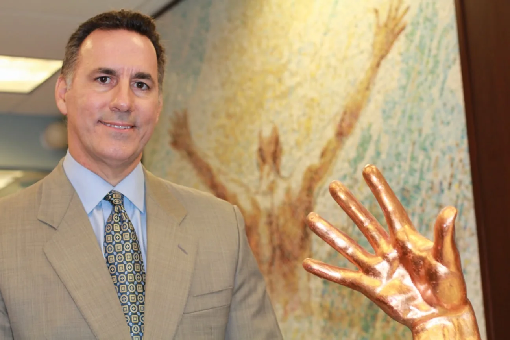
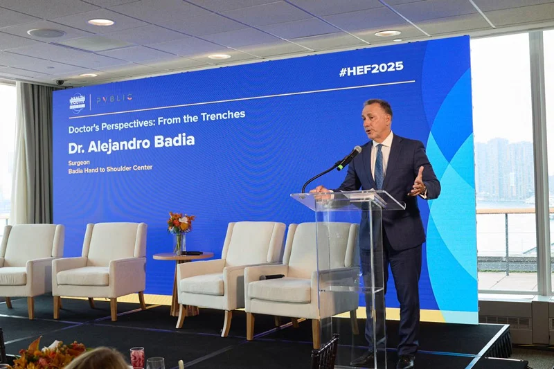
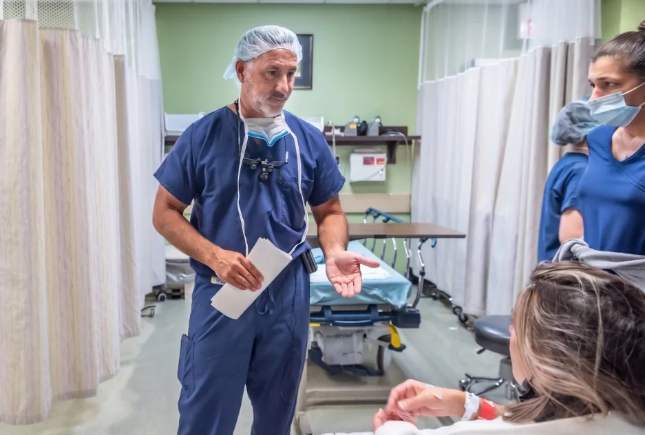
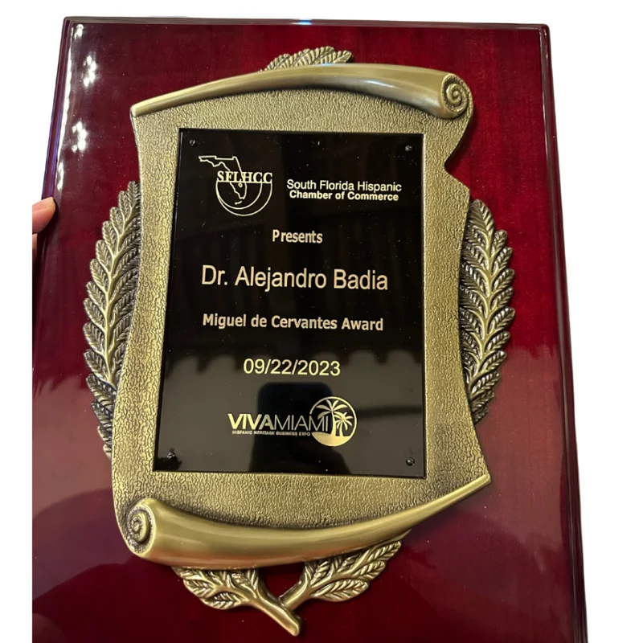
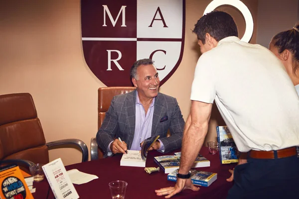
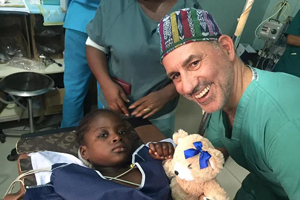
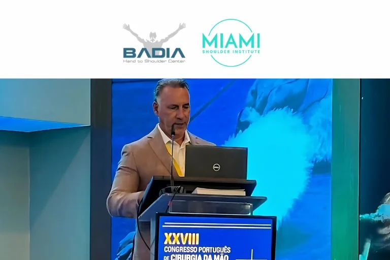
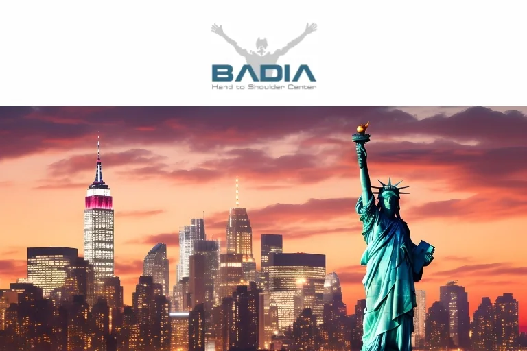
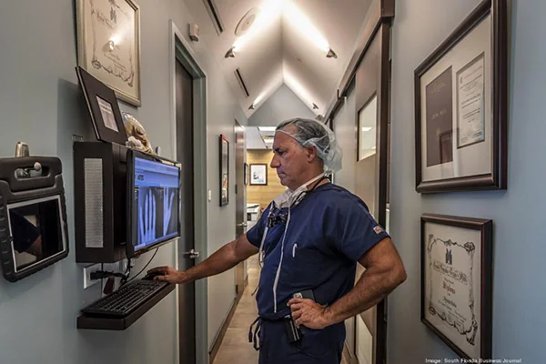
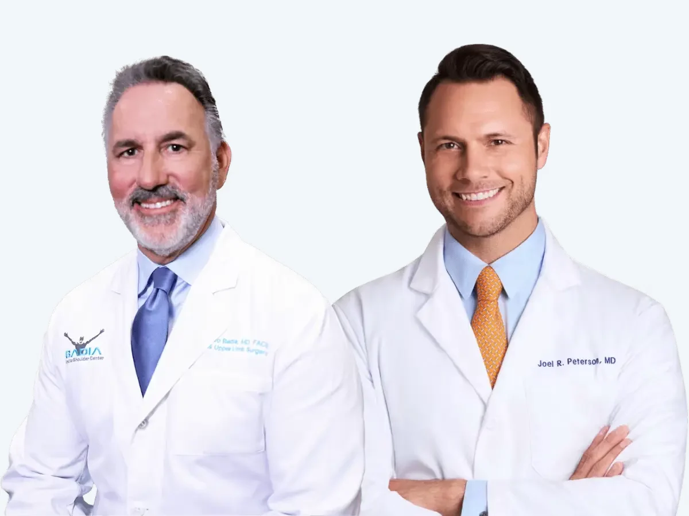

HomeDr. Badia
Alejandro Badia, MD, FACS.
Hand and upper-limb orthopedic surgeon. Founder of Badia Hand to Shoulder Center and The Surgery Center at Doral. Former chief of hand surgery at Baptist Hospital of Miami. Past President of ISSPORTH.

Alejandro Badia, MD, FACSFrom Bellevue to Doral.
He left Cuba with his parents at six months old and grew up in Elizabeth, New Jersey. He studied physiology at Cornell, earned his medical degree at NYU and trained in orthopedics there, serving as chief resident at Bellevue Hospital. A hand fellowship at Allegheny General Hospital in Pittsburgh was followed by an AO trauma fellowship in Freiburg, Germany, and further training in France, Switzerland and Italy.
- 1985Cornell University
- 1989Medical degree, New York University
- 1995Fellowships in Germany, France, Switzerland and Italy. Co-founds the Miami Hand Center
- 2005Founding partner, Miami Anatomical Research Center
- 2008Founds Badia Hand to Shoulder Center and The Surgery Center at Doral
- 2010Founds OrthoNOW®, the first orthopedic urgent care center in South Florida
- 2011President of ISSPORTH, to 2013. Named among Miami’s 100 most outstanding Latinos
- 2023Miguel de Cervantes Award, South Florida Hispanic Chamber of Commerce
- 2025Speaks at the United Nations Health Equity Forum in New York

Health Impact Forward, New York, 2025A practicing surgeon’s voice at the UN.
During the 80th session of the UN General Assembly, Dr. Badia spoke at the Health Impact Forward forum on health equity, for the physicians who deliver care.
- Oversight, not authorization. Insurers should oversee care, not restrict access to it.
- The right specialist at the right time. Prompt access to qualified specialists.
- Fewer middlemen. Lower costs and better quality.
- Physicians at the table. Policy shaped by people who practice.
He trains the surgeons other patients will see.
Much of what Dr. Badia does happens outside his own operating room.
MARC
In 2005 he co-founded the Miami Anatomical Research Center, a cadaveric surgical training lab where surgeons from around the world practice techniques before using them on patients.
International fellowship
He runs an active international hand fellowship, offers free observerships to colleagues from abroad, and serves on the editorial boards of two hand journals.
Live Surgery Tuesday
Procedures from the surgery center, shared and explained online, from endoscopic carpal tunnel release to thumb replacement.
Published staging
His arthroscopic staging system for thumb-base arthritis appeared in Hand Clinics (2006) and Operative Techniques in Orthopaedics (2007). See how it guides treatment.
A decade of Miami meetings
For ten years he organized a yearly Miami meeting for surgeons and therapists devoted to upper-limb arthroscopy and joint replacement.
ISSPORTH
As President of the International Society for Sport Traumatology of the Hand, he led a society of hand specialists, sports institutions and Olympic organizations.
Healthcare from the Trenches.
Dr. Badia has been in the trenches of American healthcare since 1989. His book makes the case for reform from the people who actually deliver care, from insurance and hospital bureaucracy to the moral injury of doctors. His podcast, Fixing Healthcare… from the Trenches, brings on the people trying to fix it.
Available in print and as an audiobook.
The work, in pictures.








Dr. Joel Peterson, shoulder and elbow.
An orthopedic surgeon specializing in the shoulder and elbow, trained at Princeton, Rutgers Robert Wood Johnson, Columbia University and New York-Presbyterian, with a shoulder and elbow fellowship at the Hospital for Special Surgery. His special interest is shoulder arthritis and joint replacement.
Dr. Peterson sees patients at Badia Hand to Shoulder Center and Miami Shoulder Institute, and accepts most major insurance plans.
Meet Dr. Badia.
In person in Doral, by video from anywhere, or on a New York procedure day.